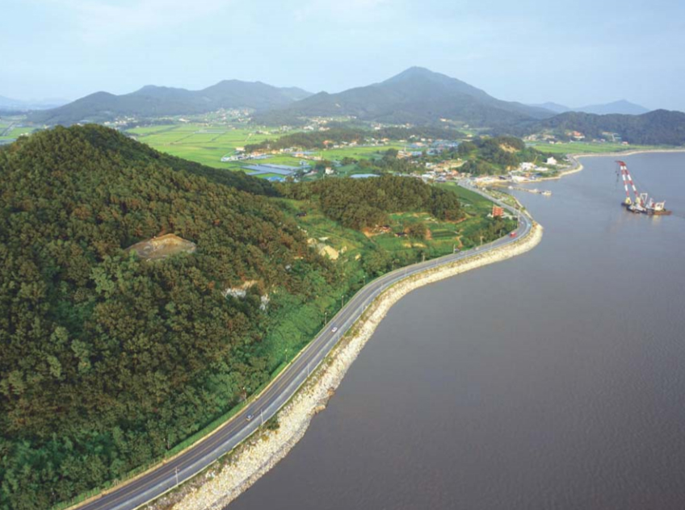
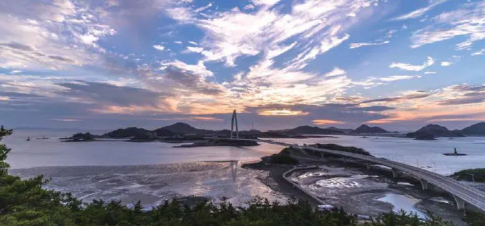
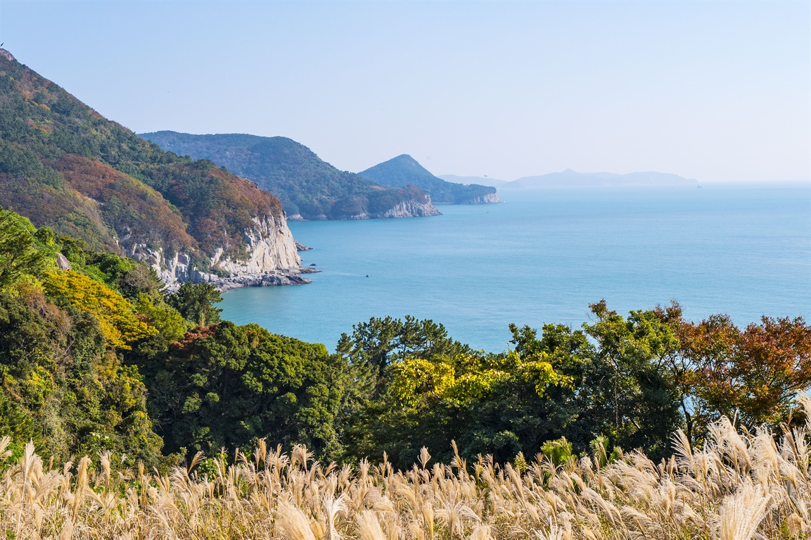
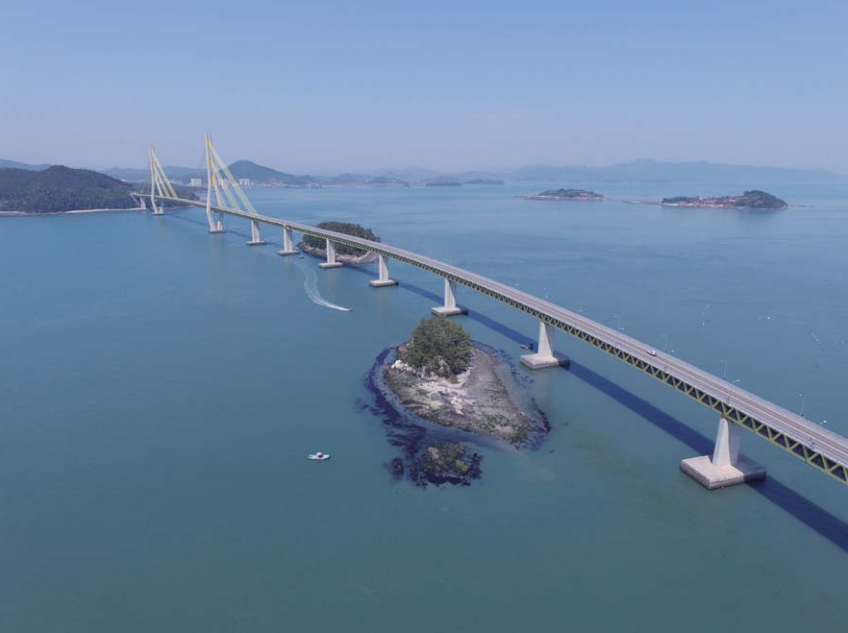
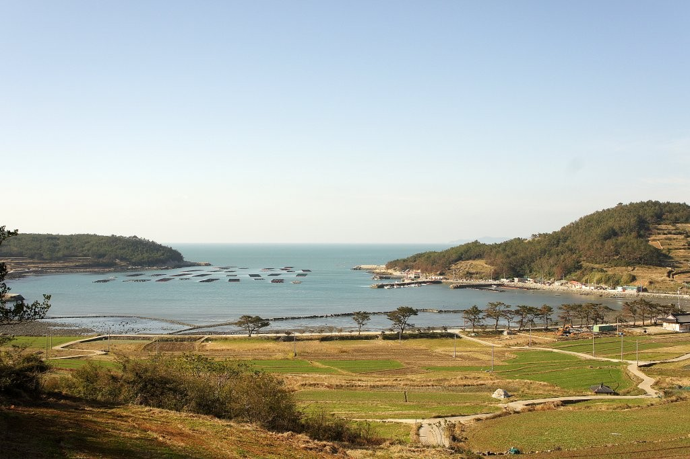
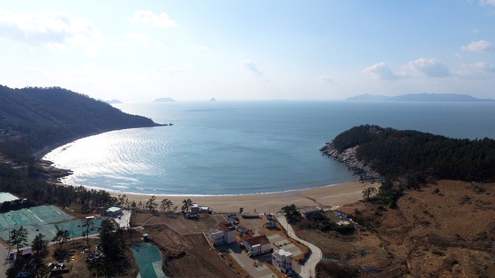
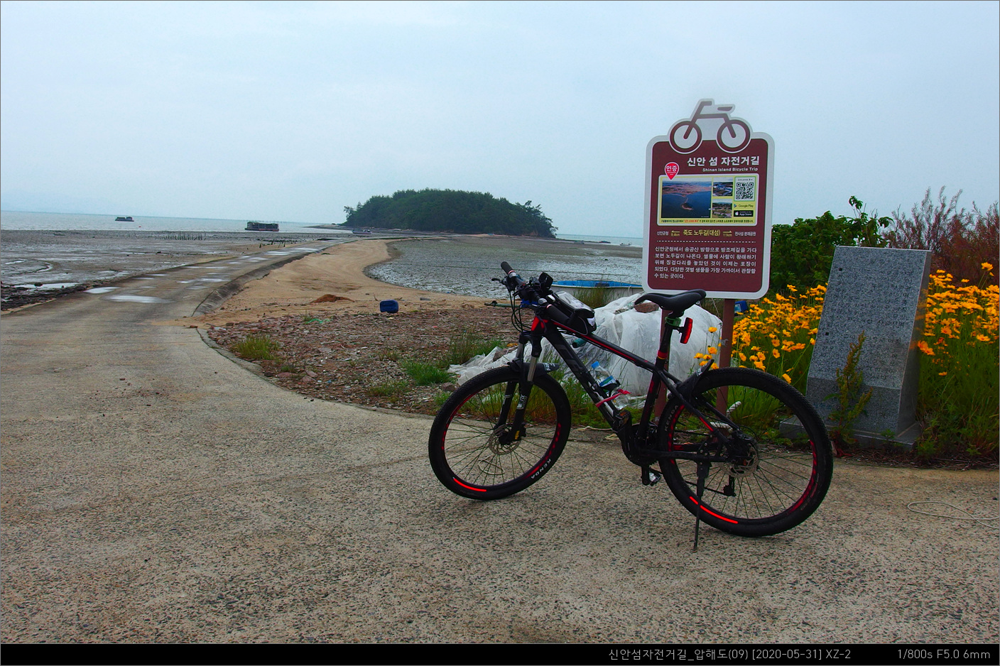
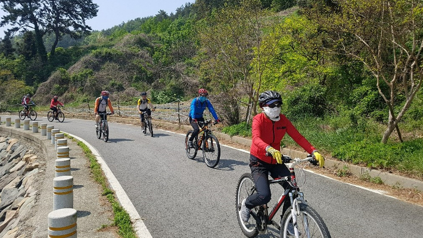

명품 자전거길
지자체 명품 자전거길은 전국 곳곳에 거미줄처럼 얽혀있는 지자체가 조성한 자전거길 중에서 여행전문작가, 동호인, 잡지사 기자 등이 참여하여 엄선한 전국 10곳의 명품 자전거길 입니다.



강화군(지붕 없는 박물관) 자전거길

군산 고군산도 자전거길

여수 금오도 해안도로 자전거길

고흥군 (거금도~소록도) 자전거길

완도군 청산도 자전거길

완도군 생일도 자전거길

신안군(압해도) 자전거길

제주 환상 자전거길(오조리~성산리)
"여수시, 자전거 타기 좋은 도시로 탄소중립 대비"
여수시의회 김채경 의원, 자전거 활성화 정책 촉구
전남 여수시가 자전거 이용 활성화 정책을 도입해 탄소중립 사회로의 전환을 준비해야 한다는 목소리가 나왔다. 24일 여수시의회에 따르면 김채경 의원은 최근 열린 제230회 임시회 5분 발언을 통해 네덜란드의 자전거 문화를 소개하며 여수시의 자전거 활성화 정책 도입을 촉구했다. 김 의원은 "세계 최초로 공공자전거를 도입한 네덜란드의 경우 인구 대비 자전거 보유가 가장 많은 자전거 선진국으로 다양한 인센티브와 안전한 자전거도로, 잘 갖춰진 법규와 기반 시설 등으로 도시 곳곳에 자전거가 누비고 있다"고 소개했다...
https://www.nocutnews.co.kr/news/5982263
전남CBS 최창민 기자